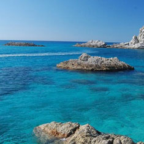

OUR INTRESTING HISTORY
Science in the media always seems to be very one-sided. News media chasing sensations and much has been written about the research, "British scientists" and the low probability, but high-profile discoveries, which may take place in the future, not only paying attention to really important things. In addition, the Internet, magazines and television are often held discussions on the "loud" threads of pseudo invited - and it seems that many of the important questions in modern science has not yet been resolved. Look At Me 8 selected topics about which most scientists have long come to a consensus, but thanks to all the media for some reason it seems that about them still makes sense to argue.
Science in the media always seems to be very one-sided. News media chasing sensations and much has been written about the research, "British scientists" and the low probability, but high-profile discoveries, which may take place in the future, not only paying attention to really important things. In addition, the Internet, magazines and television are often held discussions on the "loud" threads of pseudo invited - and it seems that many of the important questions in modern science has not yet been resolved. Look At Me 8 selected topics about which most scientists have long come to a consensus, but thanks to all the media for some reason it seems that about them still makes sense to argue.
Back to the top
How does it work?
You can ask your question be filling in the form Callback
Select a piece od a jewelry that you like
You can choose your size, decoration material (silver,gold)
Make decoration unique.
You can write a variety of phrases, change shape, and even adjust the polishing.
Payment methods chosen decorations.
You can use a credit card, and other convenient for you.
Above decoration will be ready within 3-7 days.
On this site you can choose the most convenient way for delivery.
You have successfully passed all the menu items.
We beautifully pack and deliver your decoration in our signature box.)
Wear purchased item with pleasure.
As credit cards, and other convenient for you.
Back to the top
WHY CHOOSE US?
Simplicity
You will not see our jewelry set rhinestones, huge rocks and massive detalley - we appreciate the simplicity.
Handmade
All our decorations - handmade and each of them we put a piece of the soul and the long hours of hard work.
The uniqueness
Do you and your friend will never be the same decorations - all our jewelery is unique.
Trust
From the outset, we are building a relationship of trust with our customers.
Back to the top
As with any other phase of the project, this stage should also be assessed at all stages and in any way possible. The more you study this stage, the better you understand your users, the reasons for which they leave or stay, and this information will increase the number of the latter. Below you will find 21 tips for organizing user activation, which will help you to understand the visitors and to reduce these annoying all indicators of "unnecessary visits."
As with any other phase of the project, this stage should also be assessed at all stages and in any way possible. The more you study this stage, the better you understand your users, the reasons for which they leave or stay, and this information will increase the number of the latter. Below you will find 21 tips for organizing user activation, which will help you to understand the visitors and to reduce these annoying all indicators of "unnecessary visits."
Back to the top
OUR PHOTOBLOG


Like any other phase of the project, this phase should also be assessed at all stages and in any way. The more you study this stage, the better you understand your users, the reasons for which they leave or stay, and this information will allow to increase the number of the latter. Below you will find 21 Council for organizing activated users that will help you understand the visitors and to reduce those irritating all the indicators of "unnecessary viewings".
Like any other phase of the project, this phase should also be assessed at all stages and in any way. The more you study this stage, the better you understand your users, the reasons for which they leave or stay, and this information will allow to increase the number of the latter. Below you will find 21 Council for organizing activated users that will help you understand the visitors and to reduce those irritating all the indicators of "unnecessary viewings".
Back to the top